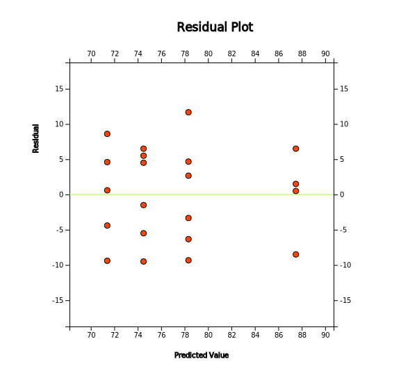

If the F test of the one-way ANOVA does not show a significant difference between each level of the factor, it
can be concluded that there is no difference between each level of populations. However, if you conclude that
there are significant differences between each level as shown in [Example 9.1.1], you need to examine which
levels are different from each other.
The analysis of differences between population means after ANOVA requires several tests for the mean difference
to be performed simultaneously and it is called as the multiple comparison. The hypothesis for the multiple
comparison to test whether the level means, \(\mu_i\) and \(\mu_j\), are equal is as follows:
$$
H_0 : \mu_i = \mu_j , \quad H_1 : \mu_i \ne \mu_j \quad i=1,2,...,k-1,\; j=i+1,i+2,...,k
$$
It means that there are \(_{k}C_{2}\) tests to be done simultaneously for the multiple comparisons
if there is \(k\) level of the factor.
There are many multiple comparison tests, but Tukey's Honestly Significant Difference (HSD) test is most commonly
used. The statistic for Tukey's HSD test to compare means \(\mu_i\) and \(\mu_j\) is the sample mean
difference \({\overline y}_i - {\overline y}_j\) and the decision rule to test \(H_0 : \mu_i = \mu_j\) is as follows:
If \(|{\overline y}_i - {\overline y}_j | > HSD_{ij}\), then reject \(H_0\)
where \(HSD_{ij} = q_{k,n-k; α} \cdot \sqrt{\frac{1}{2} ( \frac{1}{n_i } + \frac{1}{n_j} ) MSE }\),
\(n_i\) and \(n_j\) are the number of samples (repetitions) in \(i^{th}\) level and \(j^{th}\) level,
\(MSE\) is the mean squared error, \(q_{k,n-k; α}\) is the right tail 100\(\times \alpha\)
percentile of the studentized range distribution with parameter \(k\) and \(n-k\) degrees of freedom.
(It can be found at『eStatU』 (<Figure 9.1.8>)).
Example 9.1.2
In [Example 9.1.1], the analysis variance of English scores by the grade concluded that the null hypothesis was
rejected and the average English scores for each grade were not all the same. Now let's apply the multiple
comparisons to check where the differences exist among each school grade with the significance level of 5%. Use
『eStat』 to check the result.
Answer
The hypothesis of the multiple comparisons is \(\small H_0 : \mu_i = \mu_j , \quad H_1 : \mu_i \ne \mu_j\)
and the decision rule is as follows:
'If \(\small {\overline y}_i - {\overline y}_j > HSD_{ij}\), then reject \(\small H_0\)'
Since there are four school grades (\(k=4\)), \(_{4}C_{2}\) = 6 multiple comparisons are possible as follows.
The 5 percentile from the right tail of HSD distribution which is used to test is
\(q_{k,n-k; α} = q_{4,21-4; 0.05}\) = 4.02.
1) \(\small H_0 : \mu_1 = \mu_2 , \quad H_1 : \mu_1 \ne \mu_2\)
\(\small |{\overline y}_1 - {\overline y}_2 | =|78.3 - 74.5| \) = 3.8
\(\small HSD_{12} = q_{k,n-k; α} \cdot \sqrt{\frac{1}{2} ( \frac{1}{n_1 } + \frac{1}{n_2} ) MSE }\)
= \(\small q_{4,21-4; 0.05} \cdot \sqrt{\frac{1}{2} ( \frac{1}{6} + \frac{1}{6} ) 49.355 }\) = 11.530
Therefore, accept \(\small H_0\)
2) \(\small H_0 : \mu_1 = \mu_3 , \quad H_1 : \mu_1 \ne \mu_3\)
\(\small |{\overline y}_1 - {\overline y}_3 | =|78.3 - 71.4| \) = 6.9
\(\small HSD_{13} = q_{k,n-k; α} \cdot \sqrt{\frac{1}{2} ( \frac{1}{n_1 } + \frac{1}{n_3} ) MSE }\)
= \(\small q_{4,21-4; 0.05} \cdot \sqrt{\frac{1}{2} ( \frac{1}{6} + \frac{1}{5} ) 49.355 }\) = 12.092
Therefore, accept \(\small H_0\)
3) \(\small H_0 : \mu_1 = \mu_4 , \quad H_1 : \mu_1 \ne \mu_4\)
\(\small |{\overline y}_1 - {\overline y}_4 | =|78.3 - 88.5| \) = 10.2
\(\small HSD_{14} = q_{k,n-k; α} \cdot \sqrt{\frac{1}{2} ( \frac{1}{n_1 } + \frac{1}{n_4} ) MSE }\)
= \(\small q_{4,21-4; 0.05} \cdot \sqrt{\frac{1}{2} ( \frac{1}{6} + \frac{1}{4} ) 49.355 }\) = 12.891
Therefore, accept \(\small H_0\)
4) \(\small H_0 : \mu_2 = \mu_3 , \quad H_1 : \mu_2 \ne \mu_3\)
\(\small |{\overline y}_2 - {\overline y}_3 | =|74.5 - 71.4| \) = 3.1
\(\small HSD_{23} = q_{k,n-k; α} \cdot \sqrt{\frac{1}{2} ( \frac{1}{n_2 } + \frac{1}{n_3} ) MSE }\)
= \(\small q_{4,21-4; 0.05} \cdot \sqrt{\frac{1}{2} ( \frac{1}{6} + \frac{1}{5} ) 49.355 }\) = 12.092
Therefore, accept \(\small H_0\)
5) \(\small H_0 : \mu_2 = \mu_4 , \quad H_1 : \mu_2 \ne \mu_4\)
\(\small |{\overline y}_2 - {\overline y}_4 | =|74.5 -88.5| \) = 14
\(\small HSD_{24} = q_{k,n-k; α} \cdot \sqrt{\frac{1}{2} ( \frac{1}{n_2 } + \frac{1}{n_4} ) MSE }\)
= \(\small q_{4,21-4; 0.05} \cdot \sqrt{\frac{1}{2} ( \frac{1}{6} + \frac{1}{4} ) 49.355 }\) = 12.891
Therefore, reject \(\small H_0\)
6) \(\small H_0 : \mu_3 = \mu_4 , \quad H_1 : \mu_3 \ne \mu_4\)
\(\small |{\overline y}_3 - {\overline y}_4 | =|71.4 - 88.5| \) = 17.1
\(\small HSD_{34} = q_{k,n-k; α} \cdot \sqrt{\frac{1}{2} ( \frac{1}{n_3 } + \frac{1}{n_4} ) MSE }\)
= \(\small q_{4,21-4; 0.05} \cdot \sqrt{\frac{1}{2} ( \frac{1}{5} + \frac{1}{4} ) 49.355 }\) = 13.396
Therefore, reject \(\small H_0\)
The result of the above multiple comparisons shows that there is a difference between \(\mu_2\) and \(\mu_4\),
\(\mu_3\) and \(\mu_4\) as can be seen in the dot graph with average in <Figure 9.1.1>.
It also shows that \(\mu_1\) has no significant difference from other means.
If you click 'Multiple Comparison' in the options of the ANOVA as in <Figure 9.1.3>, 『eStat』shows
the result of Tukey's multiple comparisons as shown in <Figure 9.1.9>. 『eStat』also shows the mean
difference and 95% HSD value for the sample mean combination after rearranging levels of rows and columns in
ascending order of the sample means.
The next table shows that, if the HSD test result for the combination of the two levels is significant with
the 5% significance level, then * will be marked and if it is significant with the 1% significance level, then **
will be marked, if it is not significant, then the cell is left blank.

<Figure 9.1.9> HSD Multiple Comarisons
For the analysis of mean differences, confidence intervals for each level may also be used. <Figure
9.1.2> shows the 95% confidence interval for the mean for each level. This confidence interval is created
using the formula described in Chapter 6, but the only difference is that the estimate of the variance for the
error, \(\sigma^2\), is the pooled variance using overall observations rather than the sample variance of observed values at
each level. In the ANOVA table, MSE is the pooled variance.
In post-analysis using these confidence intervals, there is a difference between means if the confidence
intervals are not overlapped, so the same conclusion can be obtained as in the previous HSD test.
Another statistical analysis related to the ANOVA is a residual analysis. Various hypothesis tests
in the ANOVA are performed on the condition that assumptions hold about the error term \(\epsilon_{ij}\).
Assumptions about error terms include independence (\(\epsilon_{ij}\) are independent of each other),
homoscedasticity (each variance of \(\epsilon_{ij}\) is constant as \(\sigma^2\)), normality
(each \(\epsilon_{ij}\) is normally distributed), etc. The validity of these assumptions
should always be investigated. However, since \(\epsilon_{ij}\) can not be observed, the residual
as the estimate of \(\epsilon_{ij}\) is used to check the assumptions. The residuals in
the ANOVA are defined as the deviations used in the equation of the error sum of squares, for example,
\(Y_{ij} - {\overline Y}_{i \cdot}\) in the one-way variance analysis.
Example 9.1.3
In [Example 9.1.1] of English score comparison by the grade, apply the residual analysis using『eStat』.
Answer
If you click on ‘Standardized Residual Plot’ of the ANOVA option in <Figure 9.1.3>, a scatter plot
of residuals versus fitted values appears as shown in <Figure 9.1.10>. In this scatter plot, if the
residuals show no unusual tendency around zero and appear randomly, then the assumptions of independence and
homoscedasticity are valid. There is no unusual tendency in this scatter plot. Normality of the residuals can be
checked by drawing the histogram of residuals.

<Figure 9.1.10> Residual plot of the ANOVA
Multiple Choice Exercise
*** Choose one answer and click [Submit] button
9.1 Who first announced the ANOVA method?
9.2 What are the abbreviation of the analysis of variance?
9.3 Which areas are not the area of application for the analysis of variance?
9.4 Which sampling distribution is used for the analysis of variance?
9.5 Which is the correct process for the one-way ANOVA?
a. Calculate Total SS, Treatment SS, Error SS
b. Set the hypothesis
c. Test the hypothesis
d. Calculate the variance ration in the ANOVA table
e. Find the value in the F distribution table
9.6 Which is the correct relationship between the total sum of squares (SST), between sum of squares (SSB), error sum of squares (SSE)?
9.7 If \(F_{4,30: 0.05} = 2.87\) and the observed \(F\) ratio is 6.90 in the ANOVA table, what is your conclusion with the 5％ significance level?
9.8 Which is not appeared in the analysis of variance table?